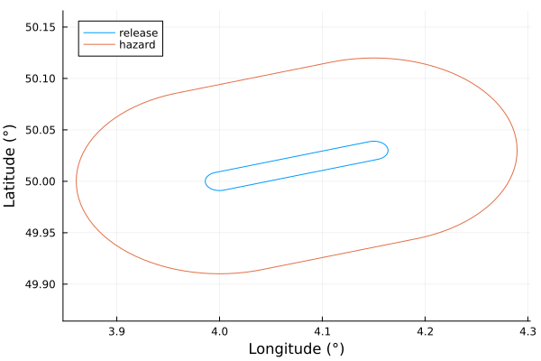

ATP45
ATP45 implements the NATO ATP-45 impact assessment model for CBRN-type incidents.
Getting started
Run with callable objects:
The package provides a simple and flexible API to run the proper ATP-45 case, according to the parameters and inputs provided by the user. For example, setting up the simplified ATP-45 model in case of chemical weapons goes like this:
using ATP45
simple_chem = Simplified(ChemicalWeapon())`simplified` procedure with parameters:
- chemsimple_chem is a callable object for which we can pass the release conditions. We define the location of the release at longitude 4.0 and latitude 50.0, as well as a wind of speed 5.0 m/s and pointing 45° from North.
release = ReleaseLocation([4., 50.]);
wind = WindDirection(5., 45.);We finally pass these as arguments to the callable object:
result = simple_chem(release, wind)Atp45Result with 2 zones and properties:
Dict{Symbol, Any} with 3 entries:
:locations => ReleaseLocation{1, Float64}(((4.0, 50.0),))
:categories => (ChemicalWeapon(),)
:weather => (WindDirection(5.0, 45.0),)The result can be easily plotted with Plots.jl:
using Plots
plot(result)
Run with run_atp
Alternatively, ATP45 can be run with the run_atp function. The following code gives the same result as above:
run_atp(Simplified(), ChemicalWeapon(), wind, release)Atp45Result with 2 zones and properties:
Dict{Symbol, Any} with 3 entries:
:locations => ReleaseLocation{1, Float64}(((4.0, 50.0),))
:categories => (ChemicalWeapon(),)
:weather => (WindDirection(5.0, 45.0),)We can also use the string id's corresponding to the categories instead of the Julia objects:
using ATP45
run_atp("detailed", "chem", "typeA", ATP45.Shell(), "stable", wind, release)Atp45Result with 2 zones and properties:
Dict{Symbol, Any} with 3 entries:
:locations => ReleaseLocation{1, Float64}(((4.0, 50.0),))
:categories => (ChemicalWeapon(), ReleaseTypeA(), Shell())
:weather => (Stable(), WindDirection(5.0, 45.0))The id's and their corresponding objects can be seen with ATP45.map_ids:
ATP45.map_ids()Dict{String, Any} with 29 entries:
"MPL" => MissilesPayload()
"MSL" => Missile()
"chem" => ChemicalWeapon()
"typeC" => ReleaseTypeC()
"MNE" => Mine()
"containergroupa" => ContainerGroup(:ContainerGroupA, ATP45.AbstractContainer…
"stable" => Stable()
"containergroupf" => ContainerGroup(:ContainerGroupF, ATP45.AbstractContainer…
"NKN" => NotKnown()
"typeB" => ReleaseTypeB()
"containergroupc" => ContainerGroup(:ContainerGroupC, ATP45.AbstractContainer…
"containergroupb" => ContainerGroup(:ContainerGroupB, ATP45.AbstractContainer…
"containergroupd" => ContainerGroup(:ContainerGroupD, ATP45.AbstractContainer…
"typeA" => ReleaseTypeA()
"SRKT" => SurfaceRocket()
"detailed" => Detailed(())
"BML" => Bomblet()
"SPR" => Spray()
"neutral" => Neutral()
⋮ => ⋮We can have more details about each categories defined in ATP-45 with the ATP45.properties method:
ATP45.properties("typeA")(id = "typeA", longname = "Air Contaminating Attack.", description = "Release following an attack with an air contaminating (non-persistent) chemical agent.", note = "Type A attack is considered the immediate, short period worst-case attack scenario because it is an immediate hazard. Assume a Type A attack if:\n- Liquid agent cannot be observed or;\n- No passive methods or indicators confirm the hazard to be a persistent agent.\n", paramtype = "category", internalname = "ReleaseTypeA")If some categories or some inputs are missing, you should get an explanatory error about what's missing:
julia> run_atp("detailed", "chem", "typeA", ATP45.Shell(), wind, release)ERROR: Some inputs are missing: The model requires a stability class. Example: `Unstable()`
Implementation of GeoInterface.jl
The Atp45Result type implements the GeoInterface.jl interface, which means that the coordinates of the ATP-45 zones can be accessed with the GeoInterface.jl methods:
using GeoInterface
result = Simplified("chem")(wind, release)
GeoInterface.coordinates(result)2-element Vector{Vector{Vector{Vector{Float64}}}}:
[[[4.0, 50.0179808838871], [4.001769910617346, 50.01794466911238], [4.003532686475607, 50.01783617077389], [4.005281221673026, 50.01765582623832], [4.007008467904209, 50.01740436248437], [4.008707462963171, 50.01708279316274], [4.010371358893593, 50.01669241449684], [4.011993449671106, 50.01623480004114], [4.013567198304348, 50.015711794318655], [4.015086263244176, 50.015125505363564] … [3.9864328016956474, 50.015711794318655], [3.98800655032889, 50.01623480004115], [3.9896286411064046, 50.01669241449684], [3.991292537036829, 50.01708279316274], [3.9929915320957914, 50.01740436248437], [3.9947187783269746, 50.01765582623832], [3.996467313524393, 50.01783617077389], [3.9982300893826532, 50.01794466911238], [4.0, 50.0179808838871], [4.0, 50.0179808838871]]]
[[[3.9605703848208336, 49.974564392595354], [4.019067882355443, 50.114934298719916], [4.178419720202626, 50.01197626526179], [3.9605703848208336, 49.974564392595354]]]It also means that the result can be easily converted to GeoJSON:
using GeoJSON
GeoJSON.write(result)"{\"type\":\"FeatureCollection\",\"features\":[{\"type\":\"Feature\",\"geometry\":{\"type\":\"Polygon\",\"coordinates\":[[[4.0,50.0179808838871],[4.001769910617346,50.01794466911238],[4.003532686475607,50.01783617077389],[4.005281221673026,50.01765582623832],[4.007008467904209,50.01740436" ⋯ 3686 bytes ⋯ "\":\"release\"}},{\"type\":\"Feature\",\"geometry\":{\"type\":\"Polygon\",\"coordinates\":[[[3.9605703848208336,49.974564392595354],[4.019067882355443,50.114934298719916],[4.178419720202626,50.01197626526179],[3.9605703848208336,49.974564392595354]]]},\"properties\":{\"type\":\"hazard\"}}]}"Documentation
ATP45.run_atp — Functionrun_atp(args...)High level function to run the ATP-45 procedure. The arguments args can be pretty flexible. They can be expressed as :
- categories and input types from
ATP45.jl
locations = ReleaseLocations([4., 50.])
wind = WindDirection(2.5, 45.)
run_atp(Simplified(), ChemicalWeapon(), locations, wind)- string corresponding to the categories' id's. See
map_idsto know the id's of the existing categories:
run_atp("simplified", "chem", locations, wind)- a combination of both:
run_atp(Simplified(), "chem", locations, wind)ATP45.ReleaseLocation — TypeReleaseLocation{N, T}Represents the N locations of the release(s).
Examples
julia> coords = [
[6., 49.],
[6., 51.],
]
julia> ReleaseLocation(coords)
ReleaseLocation{2, Float64}(((6.0, 49.0), (6.0, 51.0)))ATP45.WindDirection — TypeWindDirection(speed, azimuth) <: AbstractWindDefines the wind with its speed in m/s and its azimuth in degrees (with North as reference).
ATP45.WindVector — TypeWindVector(u, v) <: AbstractWindDefines the wind with its horizontal coordinates. u is W-E and v is S-N.
ATP45.Atp45Result — TypeAtp45ResultCollection of zones representing the result of an ATP-45 procedure result. Also contains relevant information about the input conditions. It implements the GeoInterface.FeatureCollection trait.
ATP45.map_ids — Functionmap_ids()Dictionnary mapping the existing id's to the ATP45.jl categories.
Examples:
julia> ATP45.map_ids()
Dict{String, Any} with 29 entries:
"MPL" => MissilesPayload()
"MSL" => Missile()
"chem" => ChemicalWeapon()
"typeC" => ReleaseTypeC()
"MNE" => Mine()
⋮ => ⋮